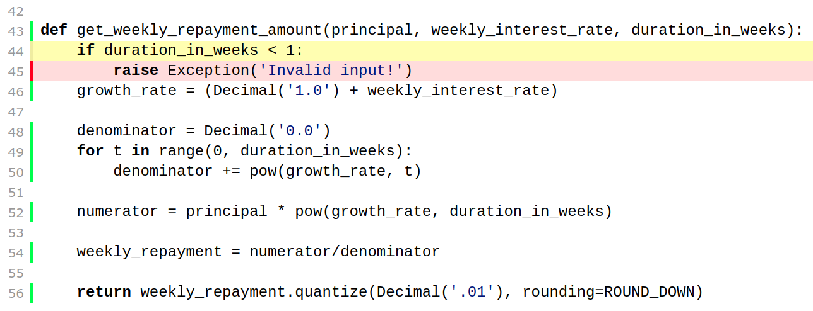

Characterisation Testing in Python
- Introduce Characterisation Tests
- Refactoring example
- Tooling
- Bug fix example
- Indirect inputs/outputs
Characterisation tests
The term was coined by Michael Feathers.

Characterisation tests document what the code does.
Characterisation tests guard against changes to behaviour.
Refactoring Example
The change
First test
AssertionError: Decimal('367.20') != '???'
---------------------------------------------
FAILED
Rerun test
---------------------------------------------
OK
Minimum of 100% branch coverage
Add another test
Exception: Invalid input!
---------------------------------------------
FAILED
Re-run test
---------------------------------------------
OK
Safety net good enough?
pip install approvaltests
- Create tests quickly
- Granular view of failures
verify
approved outputs
approvaltests_example
├── TestFormat.test_format.approved.txt
└── test.py
Contents of TestFormat.test_format.approved.txt
Hello World!
Refactoring example continued
Start using verify
Diff with empty approved file
update approved file and save
Ignore first failure
ApprovalException: 'Approval Mismatch'
---------------------------------------------
FAILED
Check test passes
---------------------------------------------
OK
verify_all_combinations
Diff with empty approved file
Update approved file & save
ApprovalException: 'Approval Mismatch'
---------------------------------------------
FAILED
Check test passes
---------------------------------------------
OK
Mistake while refactoring
Test failed
ApprovalException: 'Approval Mismatch'
---------------------------------------------
FAILED
Bugs
Tips
- Look for interesting inputs
- Run your tests regularly
Reasons for change
- Adding a feature
- Fixing a bug
- Refactoring
- Improving the design
- Performance
What changes?
| Structure | Functionality | |
| Refactoring | ✓ | |
| Feature | ✓ | ✓ |
| Bug | ✓ | ✓ |
How much changes?
| Functionality | ||
| Constant | Changes | |
| Refactoring | 100% | |
| Feature | 95% | 5% |
| Bug | 95% | 5% |
Bug fix example
Write a characterization test
Write test
Write code to pass test
Write another test
Write code to pass test
Run tests
---------------------------------------------
OK
Functions with indirect outputs
Add Tests
Record approved file
Characterisation tests:
- can be used when code can be considered correct
- guard against changes
- very quick to write
- useful for refactoring, bugs or features